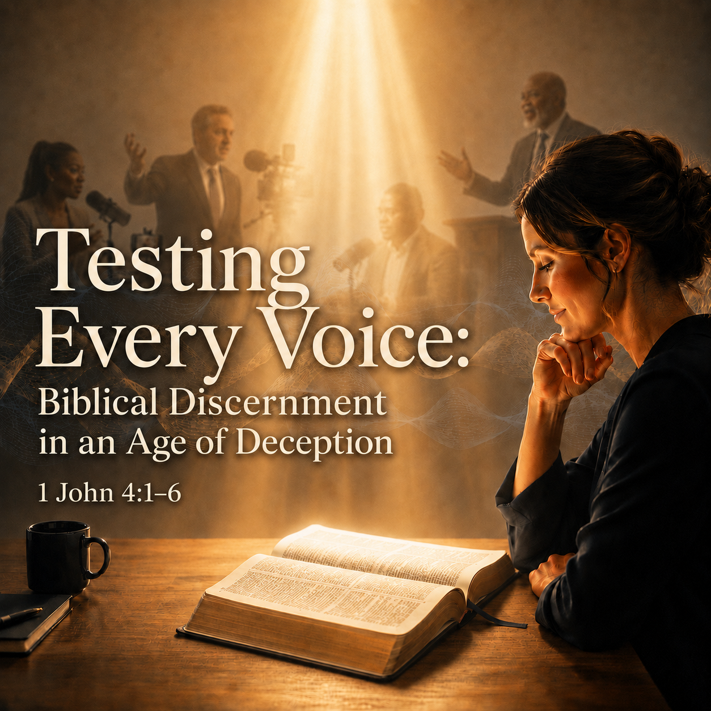

Companion Teaching • Go Deeper Podcast
Testing Every Voice
Biblical Discernment in an Age of Deception

Listen to the Go Deeper Podcast
Learn how to test spiritual claims against Scripture, recognize voices that distort biblical truth, and practice faithful discernment through 1 John 4:1-6.
This episode accompanies “Work Out Your Salvation” and offers practical guidance for remaining grounded in God’s Word amid persuasive messages, cultural pressure, and spiritual deception.